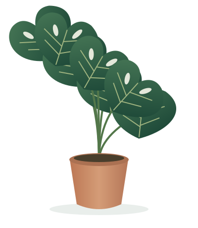

Find their happy place.
Match your plant to the light in your room. Bright, indirect light suits many indoor plants; check each plant’s care card.
BRING THE OUTSIDE IN
Make room for a little more life. Discover beautiful plants, thoughtful care, and the joy of growing something of your own.
Find your plant ↗
YOUR NEXT GREEN COMPANION
Big leaves. Small beginnings.
Find the one that feels like you.
THE CARE JOURNAL
You don’t need a green thumb to get started. Just a little curiosity and a few good habits.
Find an easy-care companion ↗Match your plant to the light in your room. Bright, indirect light suits many indoor plants; check each plant’s care card.
Feel the soil instead of watering by the calendar. Let excess water drain away and avoid leaving roots in standing water.
Rotate your pot occasionally, gently wipe dusty leaves, and watch for new growth. Small routines make a difference.
OUR ROOTS
Leaf & Root is a small idea with a simple purpose: help you create a space that feels alive. A windowsill, a desk, a favorite corner — every beginning counts.
Start growing ↗